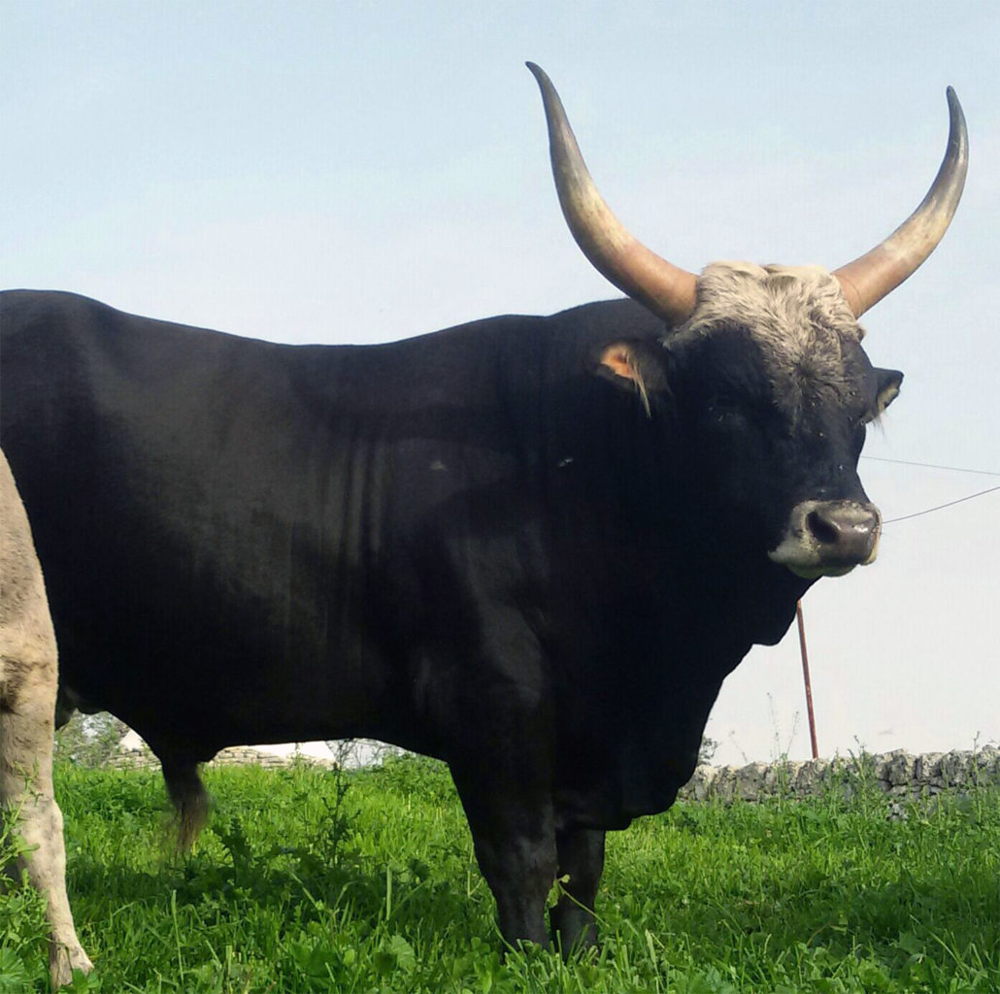

Allevamento semi-brado · Puglia
5.000
anni di storia
Un'eredità antica
E’ tra le popolazioni bovine cosiddette “podoliche”, una delle razze bovine più antiche d'Europa, portati in Italia
dalle popolazioni nomadi dell'Asia. Adattata nei secoli ai pascoli aridi del Sud Italia, ha sviluppato
caratteristiche uniche di resistenza e sapore. Oggi la “podolica” è presente ed allevata SOLO in Puglia, Basilicata, Calabria e Campania.
Grazie all’alimentazione naturale dei bovini allevati allo stato brado, che ne dona proprietà nutrizionali uniche e di qualità, possiamo godere del suo sapore, intenso e saporito.